当前版本：2025.02.27.1
本文是根据本人的长期经验，以及SD组织最新发布的内容，将各种问题通俗地解释给你听。涉及的内容应该很全面了，可以指导一般人购买SD卡、TF卡（Micro SD卡）存储卡的全过程，包括怎么配合适的读卡器也进行了详细介绍。
本文可能有一些长。以及由于标准混乱的问题，不可避免地要涉及一些技术内容。如果有什么地方感觉完全看不下去，往后跳几段就是了。
整篇文章还是比较通俗易懂的，而且大家会关心的内容基本都详细讲了。
首先得确认自己设备需要插哪种卡，或者你想用哪种卡。
常见的存储卡有这几种：
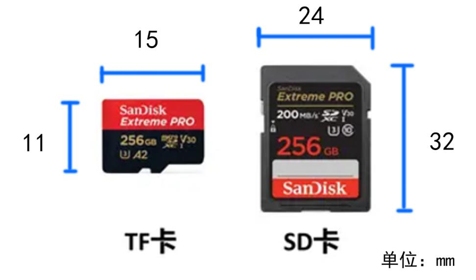
TF卡(也叫**Micro SD卡)是最常见的存储卡之一，基本上现在随便买点什么能插卡的电子小玩意儿，比如蓝牙音响、MP3、行车记录仪，都是用的这个。能插存储卡的手机、平板也是插TF卡。无人机上一般也是。
SD卡是比较常见的存储卡，普通的相机一般都是这个。还有，联想很多笔记本侧面有一个读卡器，那个通常也是插SD卡的。
不要搞错了，别管TF卡叫SD卡然后买错了。
另外，TF卡其实可以通过这样的卡套，转换成SD卡。
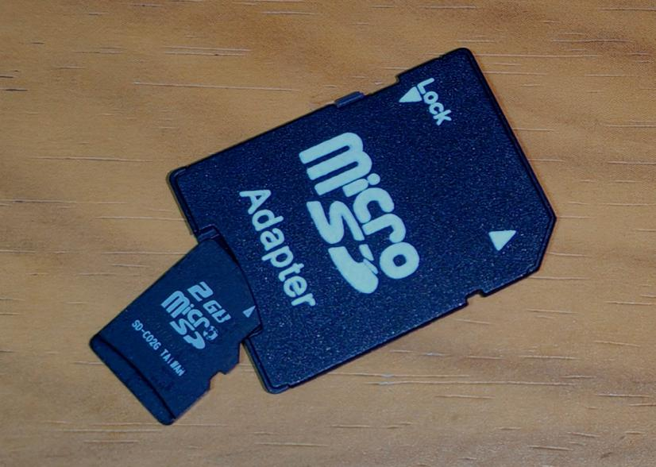
但不是很推荐这样做，尤其是如果用的卡套质量比较差，容易松动影响正常工作。
除此之外还有一些别的卡，以及一些小分类。
CF卡是不那么常见的卡，一般我们现在说的CF卡指的是CFexpress卡，走NVME协议，速度非常快，通常只在专业设备上使用。
但如果不是工作需要或者玩连拍、高码率摄像等，普通人基本上一辈子也不会接触到，就不多介绍了，真玩到那种境界的，自然比我还懂，不班门弄斧了。
（尤其是，如果真的需要用到这些，最好是自己去了解，因为到了这种比较专业的阶段的话，自学能力是很重要的）
通常，挑选存储卡只需要关注品牌、读写速度、容量，以及一些细节。
品牌就不用多说了，就是确保你买到的不是电子垃圾，而是相对安全可靠的正经玩意儿，而且有大量消费者买过一般没什么大问题，出问题了厂商也会帮你质保，不会跑路。
一般以下被看作是正经品牌：
三星，闪迪，雷克沙，索尼，东芝（铠侠），金士顿
最近致态也开始做存储卡了，不过目前性能还不是很好，小白还是挑上面几个。
然后就去这些品牌的淘宝官方店或者京东自营去买。
相对来说还是更推荐京东自营，因为不会遇到假的官方店，而且质保也更方便，整体上对小白更友好。
关于假卡
别贪小便宜去买PDD那些名字就像随机抽取两个汉字组合出来的卡。
因为如果买的是假的卡或者杂牌卡，速度慢而且质量差，很容易出问题。更严重的，可能买到扩容卡。
扩容卡就是，通过一些方式，伪造卡的容量，比如把一张32GB的卡改成看起来有128GB的。这会导致，超过真实容量的部分就会直接丢失。
详细原理和鉴别方法可以参考这篇文章：（待上传）
分享个小故事：
前几年，由于需要几张4GB的TF卡，就只好去PDD上买，4块一张。到了，一检查，发现是假的，只有10MB的真实容量。发给客服，客服说让我等着，又发了一张，这次是真的了。
之后，我又买了几次，每次都是这样，最终我收到了十几张卡[无奈].
后来这个店没了，为了做扩容卡的科普，我又PDD买了两张4GB的，果然是假的。
结果第二天录测试视频的时候，有一张直接就不识别了。
也是作为一个亲身经历告诉大家，去正规途径买正经牌子的卡，不要贪小便宜。
像是闪迪的TF卡32GB才23块，不要因为那几块钱，日后丢了照片丢了文档，结果捡了芝麻丢了西瓜。
另外再次强调，买的时候找准官方店，有很多高仿的官方店。
存储卡的速度是选择时一个比较重要的参数。一般来讲，我们关注这几个参数：读取速度和写入速度，以及实现这样速度所使用的技术。
先说速度。
通俗点解释，你把东西拷进卡里，还有相机用卡存储照片，这些都是往卡里写入；把卡里的照片拷出来，这就是从卡里读取。
读取和写入时可以达到的速度，就分别叫读取速度和写入速度。
那么，为什么我们需要关注速度呢？
读取速度
读取速度快是很重要的，你也不想拍完东西拷到电脑时拷到电脑没电还没拷完吧？
同时，如果你用存储卡来当U盘拷东西，那自然读取速度也不能太低。
写入速度
这个参数很重要，决定了用来拍摄视频能拍什么样质量的视频、连续拍照能拍多少张。
如果写入速度过低，拍摄高质量视频就来不及写进去，出现丢帧，还可能会被相机禁止拍摄高质量视频。
通常来讲，商品详情里会写出存储卡的读取速度和写入速度。比如下面这样。
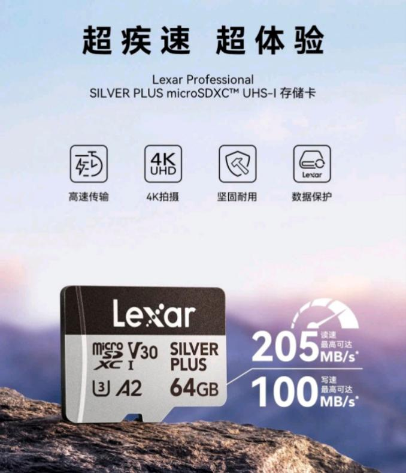
不过，低端一些的卡，由于写入速度太低（通常30MB/s以内），标出来不好看，通常会只标读取速度，所以如果看到它只给出一个速度的，那就说明它的写入速度比较低，谨慎购买。
注意，这里标出的速度是最大速度，在长时间持续读写中由于发热等原因，速度可能会有所下降，但是一般来讲还是能达到标称速度的。如果发现达不到，可以看看文章后面的讲解。
那么，如何确定我们需要多快的速度呢？
通常来讲，如果只是*普通的或者玩玩的用途，基本上都不用担心速度不够。*
比如，如果只是用在MP3、蓝牙音响之类的地方，或者只是用淘宝两三百的小相机平时拍着玩，还有监控录像、行车记录仪录像，这些对读取速度、写入速度要求并不高，一般选择大品牌官方店里最便宜的那一档就足够了。
不过必须提醒一点，越低端的挡位，通常稳定性越差**也就是越容易坏。所以，对于比较重要的场合，如行车记录仪，可以稍微买贵一点的。
如果是正经的拍摄，可以看看金士顿官网上的这张图。
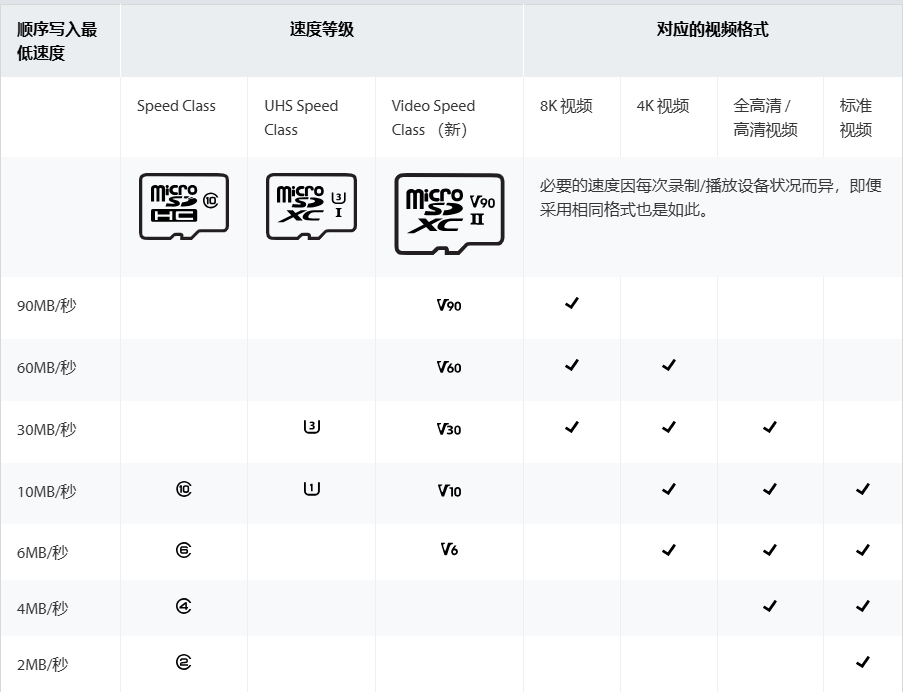
如果是游戏机例如Switch、Steam Deck这些，建议选择机器能够支持的范围内尽可能好的（当然，还得是你的钱包能支持的范围内）。
给手机、平板的话，考虑到目前一般没人把APP装到存储卡里了，根据自己的需求来就行，只要不是假的卡都问题不大。
有的人可能会好奇，刚刚展示的卡上面这些标识分别是什么意思？
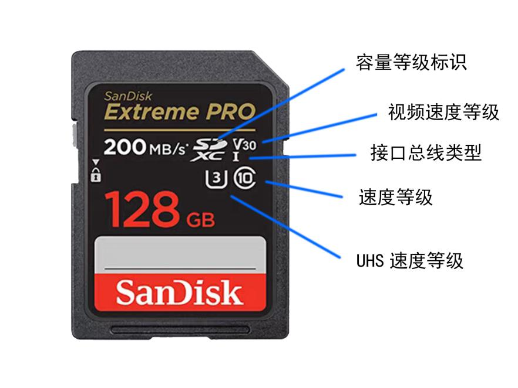
首先，容量等级标志这个不用看，是一个废话一样的标志。这个类似一个头衔，容量在某个范围就给一个对应的头衔。
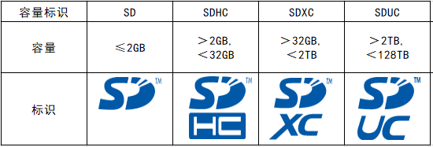
视频速度等级、速度等级、UHS速度等级都是想指出一个指标：最小持续写入速度。
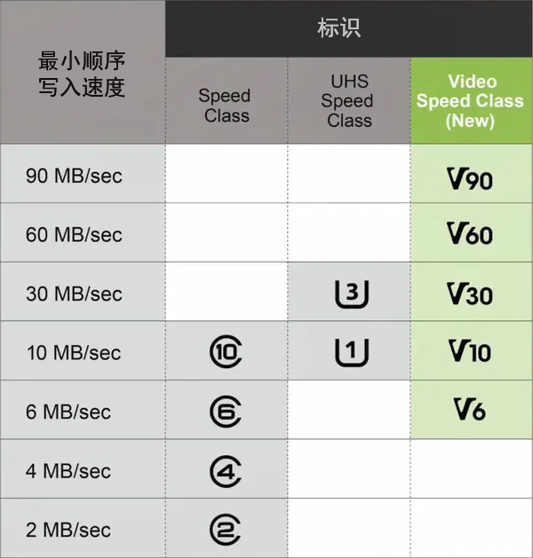
在长时间持续写入时，速度可能会降低，不是一直保持最大速度。
而这个参数的意义就是，对它持续进行顺序写入，写入的速度不低于它标出的速度。
目前SD组织已经发布了更新的表格，包含了新的速度标识。大家也可以看看。过几天有空我翻译一下。
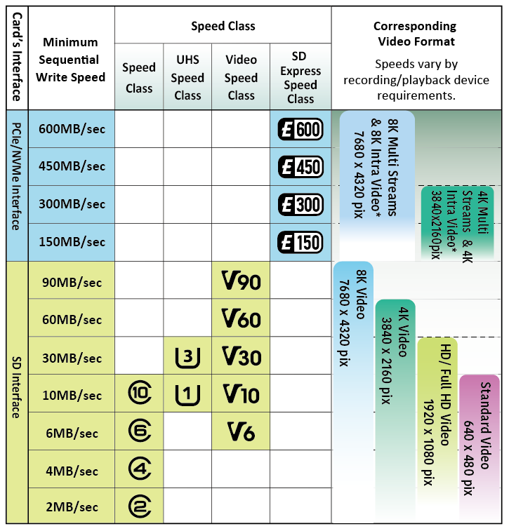
（有些品牌还会以类似1667x这样的名字去命名，这个是一个以前流行的速度标识方式，表示是150KB/s的多少倍，例如1667x就是约244.19MB/s）
那，那个接口总线标志是什么意思？这就涉及到我们需要关注的速度第三个点，速度的实现技术。
目前接口总线有UHS-I、 UHS-II、UHS-III、SD Express。存储卡上的标识说明了它支持的接口总线。
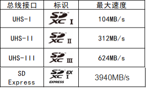
（准确来说，UHS的总线接口标识是像图中这样容量标识+接口版本，为了避免影响理解，此处只展示SDXC的标识）
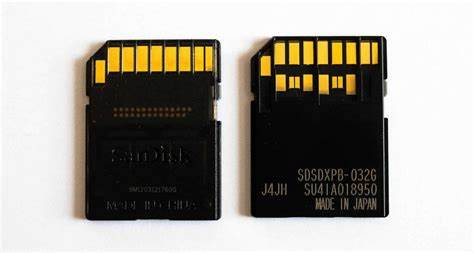
UHS-I和UHS-II的背面区别很明显。左边是UHS-I，右边是UHS-II.
UHS-II最大的区别是有两排金手指。
目前市面上还没有UHS-III的卡。不过闪迪已经发售了SD Express的卡。
这时，不知你有没有发现一个bug：市面上大多数的卡都是UHS-I的，但是他们宣称的速度很多都超过了104MB/s。这是怎么回事，是虚假宣传吗？
我们可以带着这个问题，问一问致态的客服。
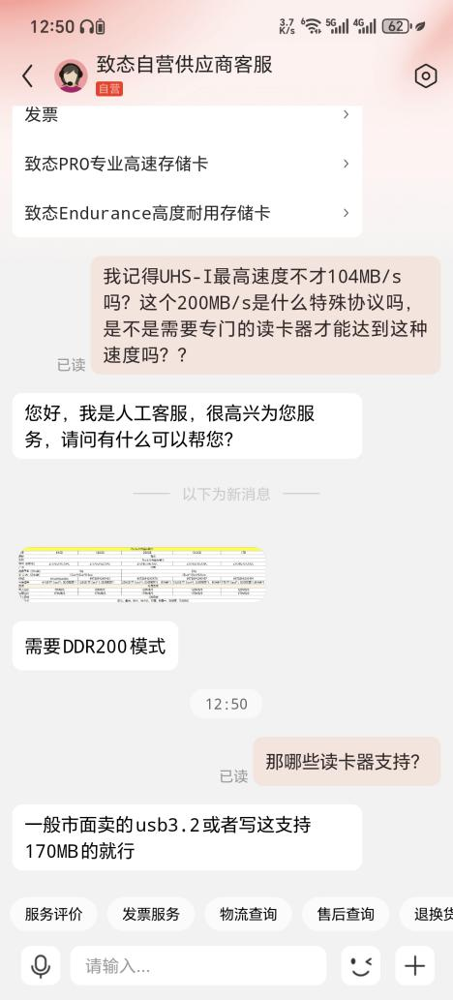
这就是“超频卡”。
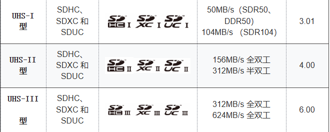
在官方的标准里，UHS-I只有SDR50、DDR50、SDR104这三种模式，对应的速度如图。但是，存储卡生产商会让卡支持标准里没有的DDR200等模式，从而可以在UHS-I的硬件接口下达到更快的速度。民间把这种卡称为超频卡。
为什么我们要了解这个？这就是为了看自己的相机支不支持，还有挑选读卡器了。假设你的卡是UHS-I的，却能达到150MB/s，那么我们就可以确定它使用了超频，要想达到150MB/s要购买支持超频卡的相机、读卡器。
本文后面部分有介绍如何挑选合适的读卡器，我们会在那里详细讨论。
挑选容量，就按照自己的需求来就好。不过需要注意，最好买的时候就提前考虑未来需求会不会增加，会不会不够用。
另外，有的存储卡哪怕同一型号，不同容量的速度是不一样的，比如闪迪的红黑卡（Extreme Pro)，64GB以上的卡读取速度200MB/s，但32GB的读取速度只有100MB/s。
如果你略懂一些，对质量有比较高的要求，可以关注一些细节，比如是MLC、TLC还是QLC，该型号口碑如何有没有品控问题，发热如何等
还有写入寿命，例如三星的白卡、致态的白卡，都是高写入耐久，适合装在监控上。
小白不用考虑这些。
这个通常不是存储卡虚标啊，一般是真的能跑到标称速度的。
国家标准对合理误差是有规定的，不是说一两句“实际速度与测试条件和设备有关”就能随便虚标的。（当然杂牌卡、假卡就不能指望它遵守了）
那为什么很多人达不到标称速度呢？
通常情况是，是因为拷贝的文件是很多很多小小的文件，而读写小文件会变慢。
举个例子，给你一杯100mL水，可能一两口就喝完了；但是喝100mL口服液，喝每一瓶都要拿吸管戳进去、喝、扔掉、拿下一瓶，喝完同样100mL所用的时间就变慢了。
如果不是小文件读写，通常是因为读卡器不合适。
这需要看读卡器的两个参数，最高速度和是否支持“超频”
首先，我们要知道，读卡器，本质上就是把存储卡的数据传输协议，转换成电脑能听懂的USB协议。
而为了成本，转换的芯片的最高速度是不同的，就是它能以多快的速度去“翻译”。
用的转换芯片越好，自然更快，也就是读卡器。
市面上很多读卡器，使用的主控最大就只支持90MB/s左右的速度。把卡插到这样的读卡器里，无论你的卡有多快，都只能最快90MB/s。
还有，前面我们说了，UHS-I超过104MB/s的卡，是通过DDR200等“超频”模式，来达到的。因此，要完全发挥这些卡的速度，我们也必须要购买支持超频的读卡器。
关于这个问题，我专门把闪迪、金士顿、致态、雷克沙的卡都买了，经过测试，可以发现各家的超频是基本通用的，至少它们都支持DDR200。
但是闪迪的读卡器可能不支持DDR200。
这里点名批评绿联，截至统计时，其淘宝店里有足足18款读卡器，价格差不多，但是参差不齐，里面只有一款是好东西，UHS-I可以达到170MB/s，其它都是最大90MB/s甚至更低的。这种行为，很难不令人怀疑是专门做这么多混淆视听多卖一些低成本的读卡器出去。
总结：挑选读卡器，最好选择写着支持USB3.2 Gen 1，而且支持DDR200的（这一点只要UHS-I下标称的速度是170MB/s以上就OK了）。（关于USB3.2 Gen 1什么的，这又是一个混乱的命名标志，未来会讲）
注意如果它只标什么5Gbps的速度，那是它试图用USB 3.2 Gen 1的速度来混淆概念，非蠢即坏，不要买。
要是客服不告诉你，那就当那玩意儿就是孬种。
要是你实在不知道买哪个，就买雷克沙的RW310，40块左右，SD和TF都能读，支持DDR200，最大210MB/s.
别说是我推荐的，因为雷克沙没给我广告费。
答：看想用来干什么。
我舍友问我，他的联想Y9000硬盘空间不够装游戏（他想装的那些都是大型游戏，不是小黄油）了，但是侧面有个SD卡槽，能不能用SD卡插上去，是不是比硬盘更便宜，还不用拆机安装硬盘？
我回答说，你可以试试，试试就逝世。
首先，真要拿来打大型游戏，总不能比机械盘还慢吧，至少得200MB/s读写，买个512GB的这样速度的卡，就已经比1TB的固态还贵一大截了。（哪怕普通速度的存储卡，和硬盘相比也不便宜）
而前面说了，带SD卡槽的电脑一般也就是UHS-I的，而且通常不支持DDR200等超频技术（通常情况，具体支不支持看自己电脑的说明），所以为了速度达到200MB/s，还不能插在电脑自带的卡槽里，得专门配一个支持DDR200或UHS-II的读卡器。
那到了这里已经没什么意义了，都是外接一大堆东西，那还不如接个移动硬盘。
而且，一般的SD卡的存储颗粒一般也不咋样（相比硬盘），还拿来当硬盘大量读写，在读卡器里面捂着保持高温工作，很容易坏（虽说坏了可以质保换个新的，但哪怕游戏丢了重新下载也很麻烦，更别提重要数据丢失了）。
所以，在硬盘/外接移动硬盘无论是在速度、价格、稳定性都远超存储卡的情况下，能换硬盘、外接硬盘，就用别的方案而不是用存储卡了。
当然，有些设备无法更换硬盘（比如手机平板、某些轻薄本），但是有存储卡槽，如果不是用来安装大型软件，只是放一些小软件、存文件，那拿存储卡拓展一下也可以，也比一直插着个移动硬盘方便可靠。